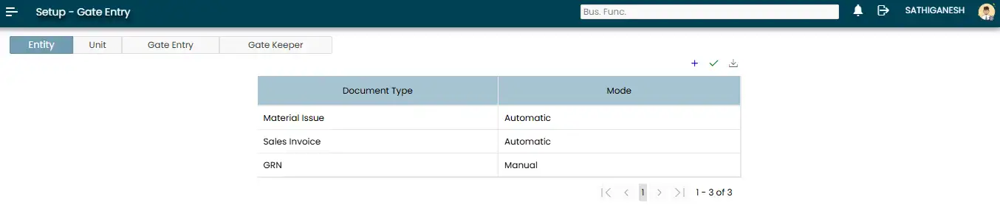

<div data-category="Gate Entry" data-title="Setup - Gate Entry\Entity" data-updated="January 23, 2026" data-contributors="RoadmapIT" data-breadcrumb="Home,Gate Entry,Setup - Gate Entry\Entity">
  <div class="page-content">
    <h5>Setup - Gate Entry\Entity</h5>
    <p>An Entity refers to a legally recognized organization that engages in commercial, industrial, or professional activities. This screen is used to define the Gate Entry control for the Entity.</p>

    <h5>Navigation path:</h5>
    <p class="fs-6">Supply Chain \ Gate Entry \ Setup \ Setup – Gate Entry \ Entity</p>

    
    <ul style="list-style-type: none; align-content: center">
      <li class="mouse-icon">Click <i class="bi bi-plus fs-4 mx-2 text-primary"></i> to create a new document Type</li>
      <li class="mouse-icon">Select Document Type from LOV.</li>
      <li class="mouse-icon">Select Mode as either Automatic or Approval</li>
      <li class="mouse-icon">Click <i class="bi bi-check-lg fs-4 mx-1 text-success"></i> to Save</li>
    </ul>
  </div>
</div>